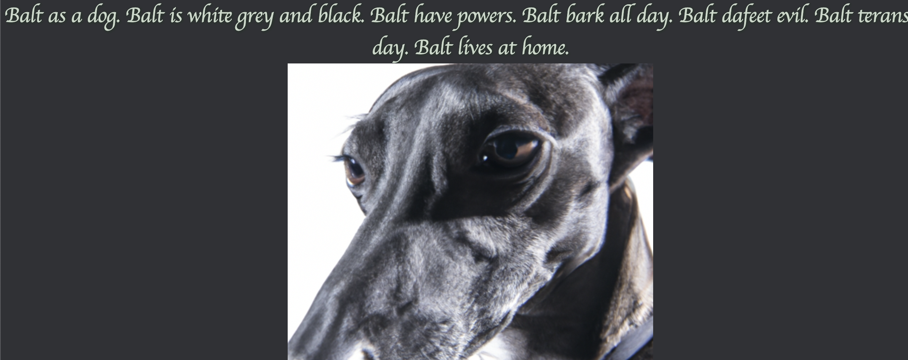

Children's Storybook Illustrator
University of California, Davis.
Objective:
“With the rapid advancement of technology, it is important to use its power in ways that benefit society. HackDavis challenges its participants to create for social good and create an opportunity for us to explore the intersection between technology and society.” (https://hackdavis.io/) University of California, Davis.
Method:
For this project my team developed an interactive website that utilizes a machine learning algorithm to generate images for children’s short stories. Our personal goal was to provide K-12 students with a tool that encouraged learning and sparked creativity, ultimately enhancing their educational experience.
